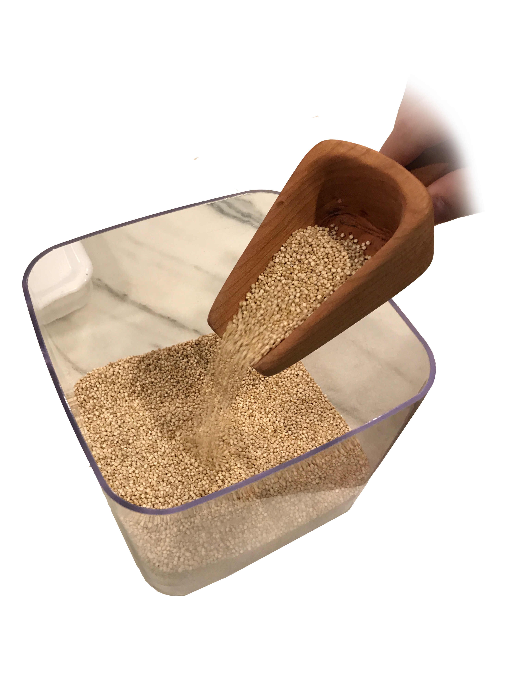
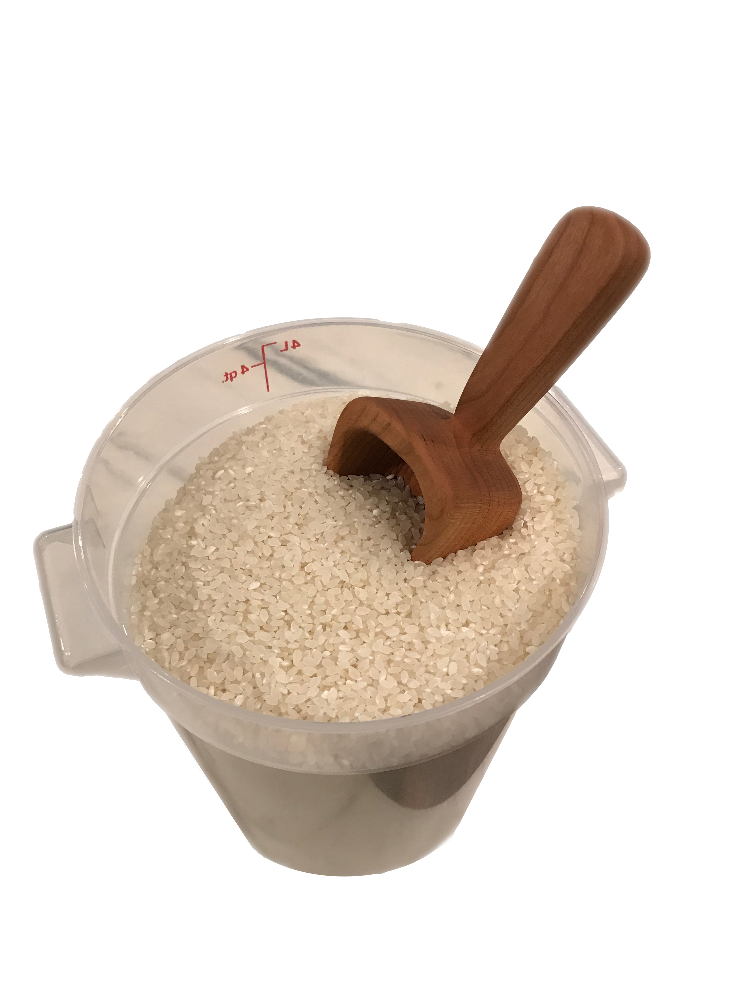

Wood Scooper
Student Project: I was given ab 8x4x3" block of wood and tasked to create any kitchen utensil.
YEAR
2017
PLATFORM
Wood, Power Tools
Process
After some basic research, I was able to sketch out a rough idea of the shape that I was going for. Next, using a band saw I cut out the top view and then the side view to give me a very basic shape of the scooper. Using lots of sandpaper and a Dremel I was able to create the inside of the concave scoop. Finally, the scooper was finished with beeswax and mineral oil.

